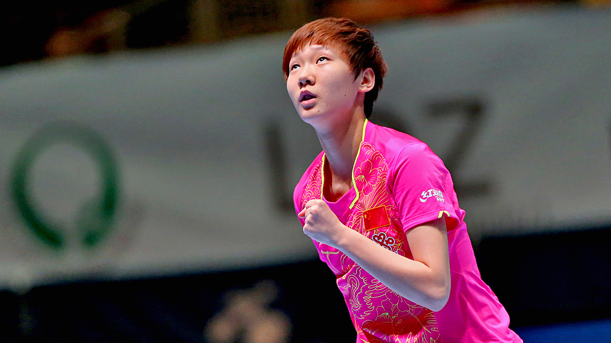

Wang Manyu crowned Women’s Singles champion in Linz following confident display against Gu Yuting
The Seamaster 2017 ITTF World Tour Platinum, Hybiome Austrian Open in Linz has crowned a new Women’s Singles champion after Wang Manyu emerged victorious for the first time in the category with a fine performance against Gu Yuting on Sunday 24th September.
Spectators in Linz were prepared for a close contest from the two Chinese competitors, and right from the start of the match there was very little between the two finalists as Wang Manyu edged to an opening game win by a two point margin.
Both players returned to the table and once again the duo fought out another close game. Gu Yuting managed to save a game point to send the second end to deuce, but Wang Manyu was the more clinical of the two players across the following two points and ultimately went on to double her games advantage.
Gu Yuting was on the back foot and her performance levels suddenly took a hit, missing out across the majority of the fast-paced rallies with Wang Manyu comfortably claiming the third end to increase her lead in the final.
Trailing 5-2 on points in the fourth game Gu Yuting attempted to break Wang Manyu’s rhythm by calling a timeout, and the decision appeared to work for the qualifier who managed to recover four consecutive points to take the lead but Wang Manyu held her nerve and eventually brought the tie to a close (11-9, 12-10, 11-2, 11-9) to claim the gold medal in straight games.
“Even though I won 4-0, three of the games were won by a narrow two-points difference, so it wasn’t as easy as the overall 4-0 seems. It’s my first World Tour title, with a first there will be a second, a third and so on. I hope this will be a good start for me” -Wang Manyu
Earlier this year in Qatar and Australia, Wang Manyu suffered agonising conclusions to her Women’s Singles campaigns – but the Chinese star is smiling at last following her terrific and well deserved title win in Austria.
For Gu Yuting it wasn’t the dream outcome that she had been hoping for but she can leave Linz feeling happy with her overall campaign in the Women’s Singles tournament, and will no doubt benefit from her experience at the competition.